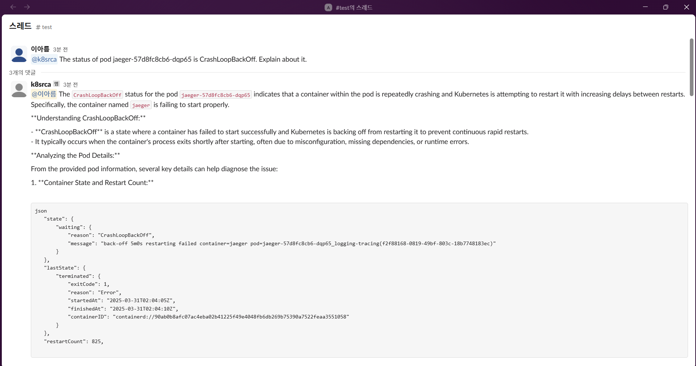
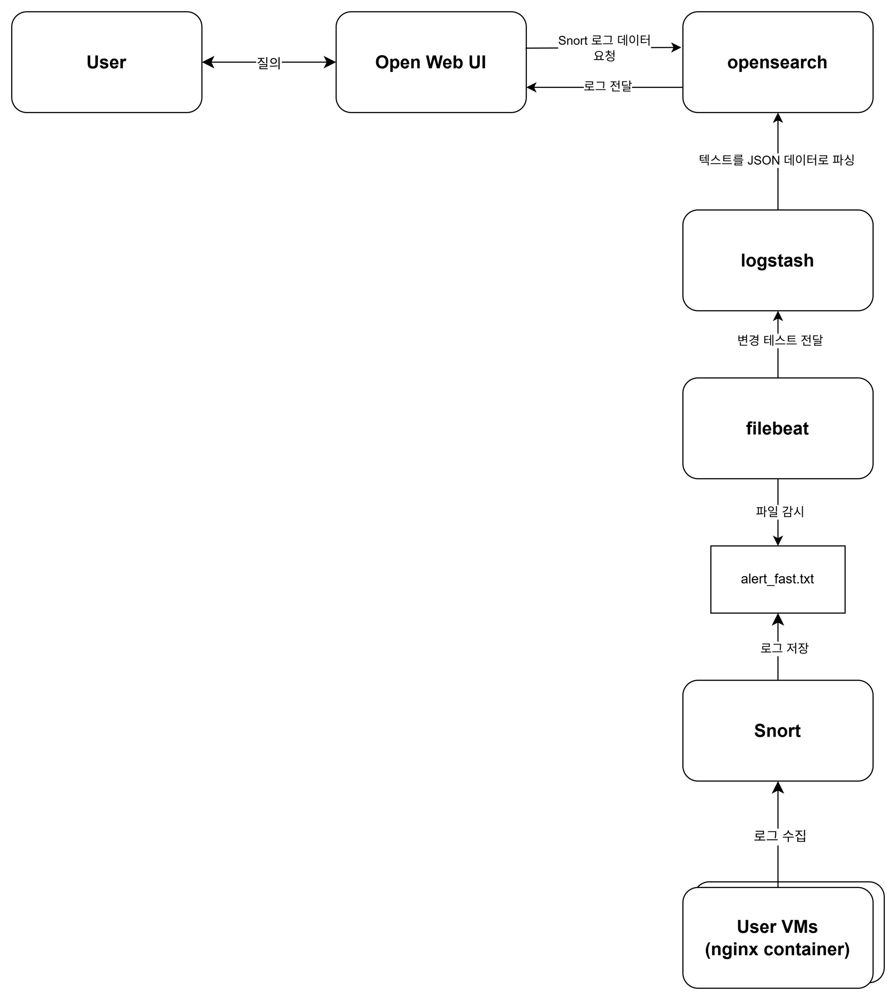
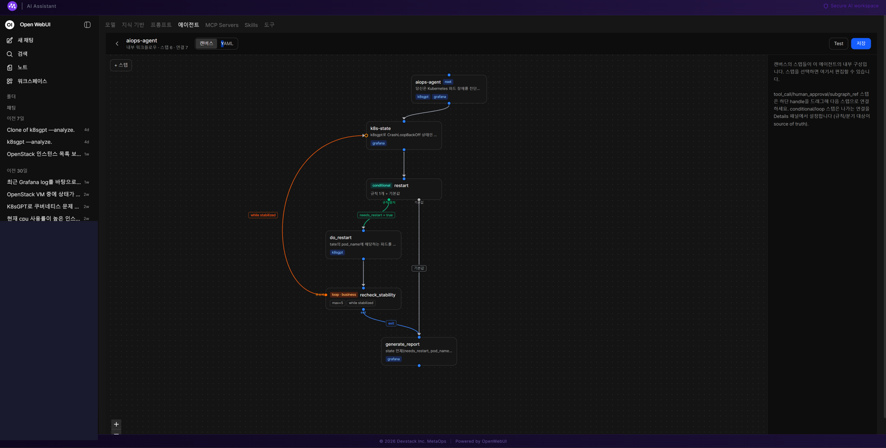

flowchart TD
U[User] --> OW[OpenWebUI]
OW --> AUTH[Authentication]
AUTH --> KC[Keycloak]
OW --> BE[AIOps Backend]
BE --> AG[LangGraph Agent]
AG --> MCP1[MCP: K8sGPT]
AG --> MCP2[MCP: Grafana]
AG --> MCP3[MCP: OpenSearch]
AIOps Platform
AIOps System Connecting an LLM Agent to Existing Infrastructure Platforms
1. Overview
An AIOps system that connects infrastructure operations experience with an LLM-based interface, letting operators query infrastructure state and get support for operational tasks in natural language. This wasn’t a one-off project — it evolved across three stages.
Slack-based single tool-calling bot (2024)
↓
RAG + OpenWebUI integration for security event analysis (2025)
↓
LangGraph-based multi-agent + multi-MCP-server integration (2026)
NoteMy Role
- Developed and built a Slack-integrated K8s LLM bot (Azure Marketplace, 2024.03–2025.05)
- Integrated an in-house security-vulnerability RAG with OpenWebUI and deployed it alongside a Snort/Logstash-based log pipeline (2025.05–2025.10)
- Designed and implemented a LangGraph-based multi-agent architecture, integrated MCP servers (K8sGPT, Grafana, OpenSearch), built an MCP server management UI, developed a SQLite-based dynamic MCP registry, and applied OpenTelemetry/Jaeger tracing (2025– )
- Debugged and resolved infrastructure issues that came up at each stage
2. Stage 1 — Slack-integrated K8s LLM Bot
Built a conversational bot that, when mentioned in Slack, calls the K8sGPT tool to analyze Pod status and answer in natural language.
Example — diagnosing CrashLoopBackOff
User (Slack): @k8srca A specific Pod is in CrashLoopBackOff. Explain what's going on.
↓
Bot: Calls the K8sGPT tool to look up Pod status (waiting reason, lastState, restartCount, etc.)
↓
Bot: Answers with a root-cause diagnosis based on what CrashLoopBackOff means and the container's restart historyExample — diagnosing ContainerCreating
User (Slack): A specific Pod is stuck in ContainerCreating — which node is it on, and why?
↓
Bot: Looks up which node the Pod is scheduled on, image pull status, and PersistentVolumeClaim binding
↓
Bot: Lists possible causes (image pulling, volume mounting, init container delays) and
suggests next diagnostic steps such as running kubectl describe pod
Note
[TODO: when adding screenshots, replace real node hostnames, internal IPs, and internal Docker registry addresses with generalized examples]

3. Stage 2 — Security-Vulnerability RAG + OpenWebUI Integration
Extended the existing K8s-focused bot with a pipeline that lets security events detected in network traffic be queried and analyzed in natural language.

Flow
- Traffic monitoring and log generation — Snort captures packets on the network interface and writes text logs to
alert_fast.txt - Data transport and refinement — Filebeat watches the log file and forwards it to Logstash, which uses a Grok filter to parse unstructured data (IP/Port/SID, etc.) into structured JSON and stores it in OpenSearch
- LLM analysis and decision-making — When a user submits a natural-language query in OpenWebUI, the LLM converts it into an OpenSearch query tool call, executes it, and presents the returned results as a natural-language report
At this stage I put into practice the interaction pattern where OpenWebUI’s LLM converts a natural-language query into a structured tool call and then explains the result back to the user — which became the foundation for the next stage’s LangGraph-based multi-agent structure.
4. Stage 3 — LangGraph-based Multi-agent AIOps Platform (current)
Extended the original single-bot structure into a LangGraph-based multi-agent architecture and integrated multiple MCP servers (K8sGPT, Grafana, OpenSearch).
Overall Architecture
Keycloak Integration
- User authentication via OpenWebUI’s integration with Keycloak
- Debugged backend authentication and the SSO logout flow
OpenWebUI Integration
In this architecture, OpenWebUI acts as both the MCP Host and the MCP Client at the same time.
User → OpenWebUI (MCP Host/Client) → Authentication → AIOps Backend → Agent → MCP Server (Tool) → Response- Built a UI inside OpenWebUI for registering/managing MCP servers (K8sGPT, Grafana, OpenSearch)
- Designed two MCP integration patterns, Mode A and Mode B
- Implemented a SQLite-based dynamic MCP server registry with a FastAPI CRUD API
Single Agent Flow
The structure of the actual LangGraph Agent graph I implemented is shown below (rooted at aiops-agent).

aiops-agent graph as seen in OpenWebUI’s Agent workflow builder — the full flow from root through diagnosis, restart, stability recheck, and report generation (internal IPs in the left-hand chat list are masked)
The diagram below illustrates the same graph.
flowchart TD
ROOT["aiops-agent (root)<br/>tools: k8sgpt, grafana"] --> STATE["k8s-state<br/>Diagnoses CrashLoopBackOff status via K8sGPT<br/>tools: grafana"]
STATE --> RESTART["restart (conditional)<br/>rule-based branching"]
RESTART -->|needs_restart = true| DO["do_restart<br/>restarts the target Pod<br/>tools: k8sgpt"]
RESTART -->|default| REPORT
DO --> RECHECK["recheck_stability (loop, max×5)<br/>while stabilized"]
RECHECK -->|repeat| STATE
RECHECK -->|exit| REPORT["generate_report<br/>synthesizes the full state<br/>tools: grafana"]
- agent state: manages state fields shared across nodes, such as
needs_restartandpod_name - tool selection: applies per-agent tool filtering, exposing only the MCP tools (k8sgpt, grafana) each node needs
- conditional / loop nodes: combines a conditional node that decides, on a rule basis, whether a restart is needed, with a loop node that repeats up to 5 times until stabilized, to build an automated recovery flow
- tool execution & result: queries Pod status through the K8sGPT MCP and, if needed, restarts the Pod and rechecks stability
- final response: synthesizes the full state (whether a restart happened, the target Pod, etc.) into an investigation report
Example Agent Request
"Check the current status of the GPU nodes."
↓
Agent → Tool Selection → Infrastructure/Monitoring MCP (K8sGPT/Grafana) → Result → Agent Analysis → User Response5. Challenges
- Debugged Keycloak / OpenWebUI authentication integration and the SSO logout flow
- Debugged a goroutine hang caused by a K8sGPT image versioning issue
- Resolved a DNS boundary issue between Docker and Kubernetes
- Migrated a SQLite schema
- Migrated the Grafana MCP transport from SSE to Streamable HTTP
- Managed agent state and designed conditional/loop nodes
- Implemented tool calling and per-agent tool filtering across multiple MCP servers
6. What I Learned
- Experience gradually evolving a Slack-based single tool-calling bot into a LangGraph-based multi-agent structure
- Experience designing an architecture where OpenWebUI serves as an MCP Host/Client
- Experience connecting a log pipeline (Snort → Filebeat → Logstash → OpenSearch) with LLM querying
- Experience designing a way to integrate multiple MCP servers into a manageable form (dynamic registry, management UI)
- How directly existing infrastructure operations knowledge translates into LLM Agent design